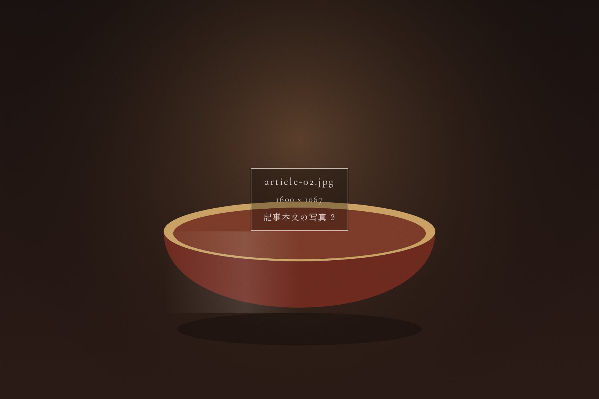

宿のまわりの町は、朝がいちばん静かです。観光のお客さんが歩きはじめる前、七時ごろの路地には、町の人たちのいつもの暮らしが流れています。今回は、スタッフが毎朝歩いている散歩道をご紹介します。
朝の町は、音から目を覚ます
格子戸を開ける音、ほうきで石畳を掃く音、豆腐屋さんのラッパの音。朝の路地を歩いていると、町が少しずつ目を覚ましていくのがわかります。宿を出て右へ、突き当たりの小さな社までは歩いて五分ほど。まずはここで手を合わせてから、散歩をはじめます。
おすすめは、川沿いの小道
社の脇から川沿いの小道に出ると、水の音がぐっと近くなります。春は桜、夏は青もみじ、秋は色づいた柿の実。季節ごとに表情を変える道なので、何度歩いても飽きることがありません。
- 歩きやすい靴で出かけましょう
- 朝は肌寒い日もあるので、羽織りものがあると安心です
- 宿のフロントで、手描きの散歩マップをお渡ししています
町の人と、ひとこと交わす
朝の散歩のいちばんの楽しみは、町の人との何気ない会話かもしれません。「おはようございます」と声をかければ、たいていは笑顔が返ってきます。
この町は、朝がいちばんきれいなんよ。
角のたばこ屋さんのおかあさん
散歩のあとの朝ごはん
散歩から戻るころには、宿の台所から土鍋ごはんの炊ける香りがしてきます。歩いたあとの朝ごはんは、いつもより少しおいしく感じられるはずです。

散歩コースの目安
| 距離 | 約2km |
|---|---|
| 所要時間 | 約40分（ゆっくり歩いて） |
| おすすめの時間 | 7:00〜8:00 |
おわりに
特別な観光地を巡らなくても、町の朝にはたくさんの発見があります。ご滞在の際は、少し早起きをして路地を歩いてみてください。きっと、この町のいつもの顔に出会えるはずです。